Marca o colapso do xogunato Ashikaga e o começo das disputas entre os daimyos.
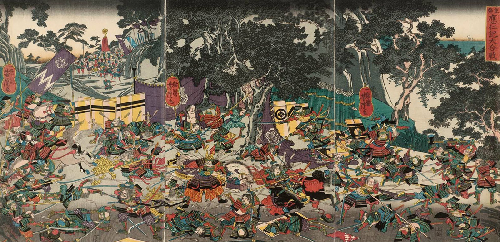Hosokawa Masamoto depõe o xogum com um golpe político repentino.
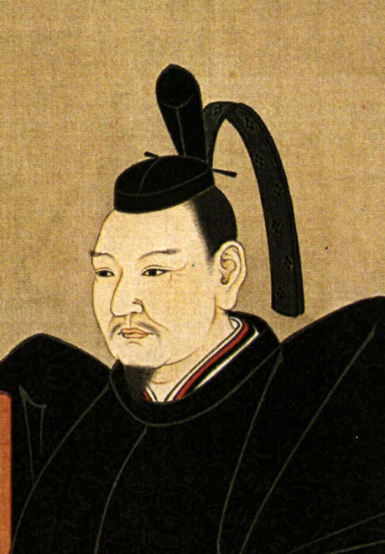Os portugueses introduzem armas de fogo e novos elementos culturais no Japão.
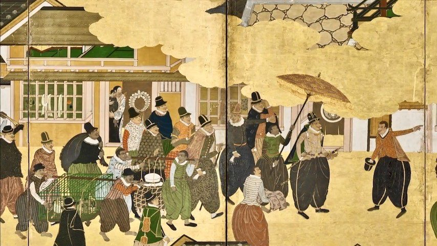Francisco Xavier chega ao Japão e inicia a propagação do Cristianismo.
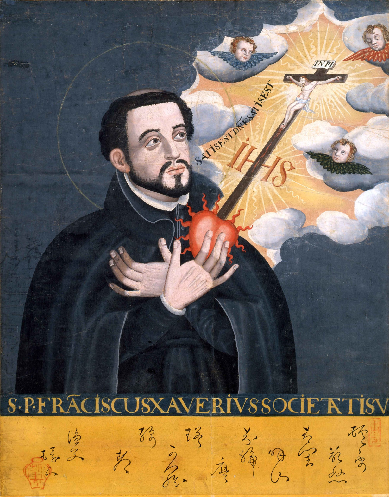Oda Nobunaga derrota o poderoso Imagawa Yoshimoto, ganhando notoriedade.
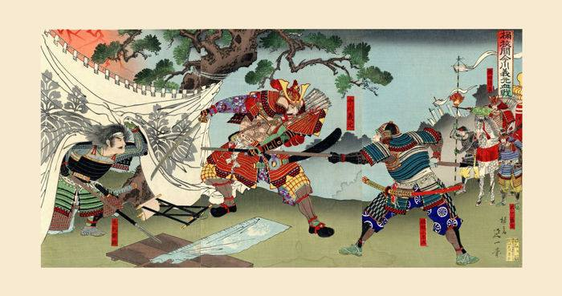Uso tático de arcabuzes por Oda Nobunaga e Tokugawa Ieyasu contra os Takeda.
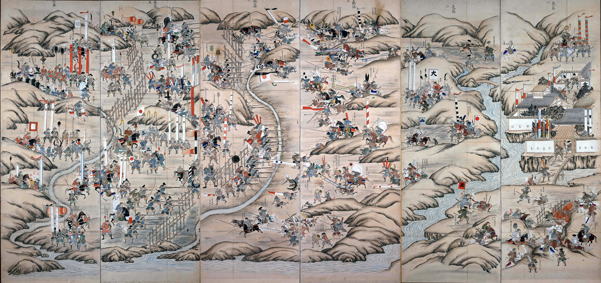Oda Nobunaga é traído por Akechi Mitsuhide e comete seppuku.
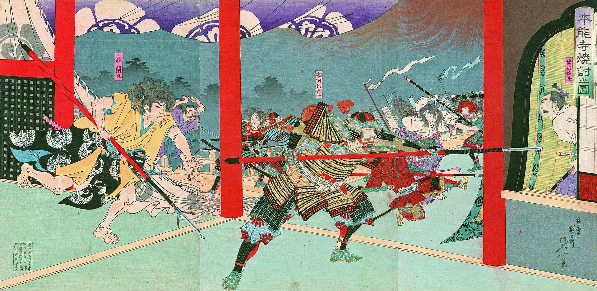Toyotomi Hideyoshi derrota Akechi Mitsuhide e vinga Nobunaga.
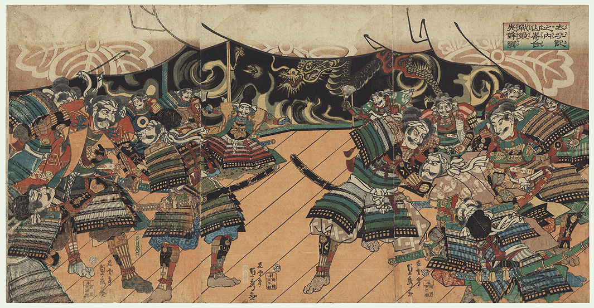Hideyoshi conquista Odawara, encerrando as guerras entre os daimyos.
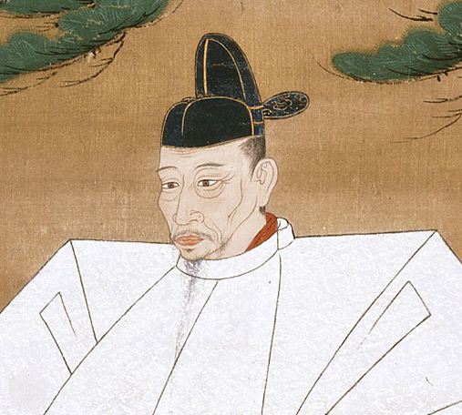Tokugawa Ieyasu vence e estabelece a base para o xogunato Tokugawa.
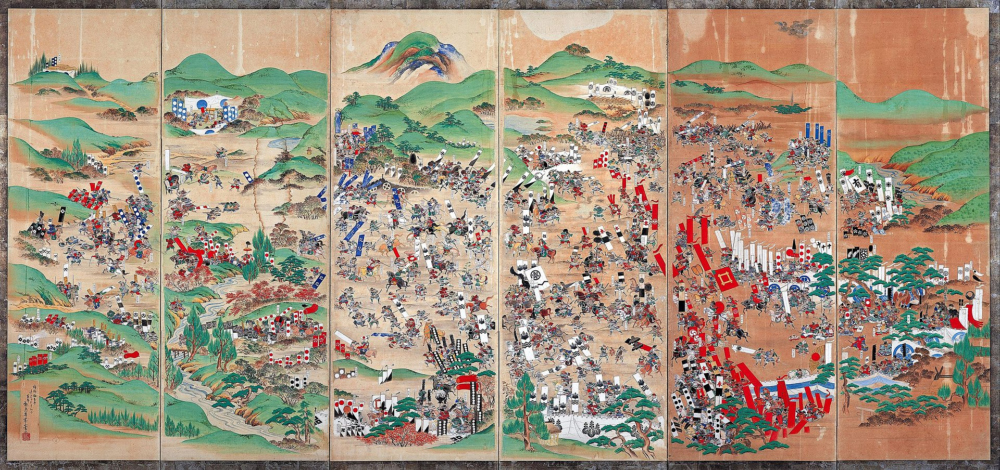Tokugawa Ieyasu é nomeado xogum, marcando o fim do Período Sengoku.
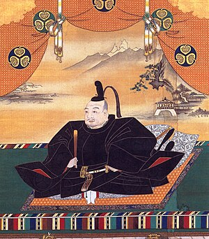